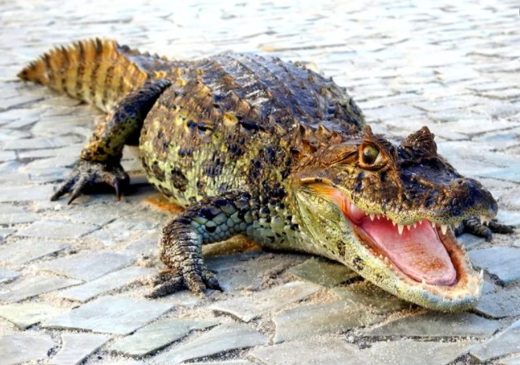

Sobre
Curiosidades
Contatos
Curiosidades sobre animais
Jacaré:

Jacaré: Réptil aquático com poderosos mandíbulas e uma pele escamosa robusta, encontrado em habitats de água doce.
Mais Sobre
Baleia:
Baleia: Mamífero marinho de grande porte que vive nos oceanos, famoso por suas canções e migrações impressionantes.
Mais Sobre
Coiote:
Coiote: Mamífero carnívoro de porte médio, nativo da América do Norte, conhecido por sua adaptabilidade e inteligência.
Mais Sobre
Panda:
Panda: Mamífero herbívoro nativo da China, famoso por sua pelagem preta e branca e dieta quase exclusiva de bambu.
Mais Sobre
Bufalo:
Búfalo: Grande mamífero herbívoro com chifres curvos, encontrado em várias partes do mundo, principalmente em savanas e pradarias.
Mais Sobre
Leopardo:
Leopardo: Grande felino carnívoro conhecido por sua pelagem manchada e habilidade de caçar tanto no solo quanto nas árvores.
Mais Sobre
Lagarto:
Lagarto: Réptil de corpo alongado com pele escamosa, encontrado em uma variedade de habitats ao redor do mundo.
Mais Sobre
Rinoceronte:
Rinoceronte: Grande mamífero herbívoro com um ou dois chifres no focinho, encontrado principalmente na África e Ásia.
Mais Sobre
 _ Logo Design Love.jpg)